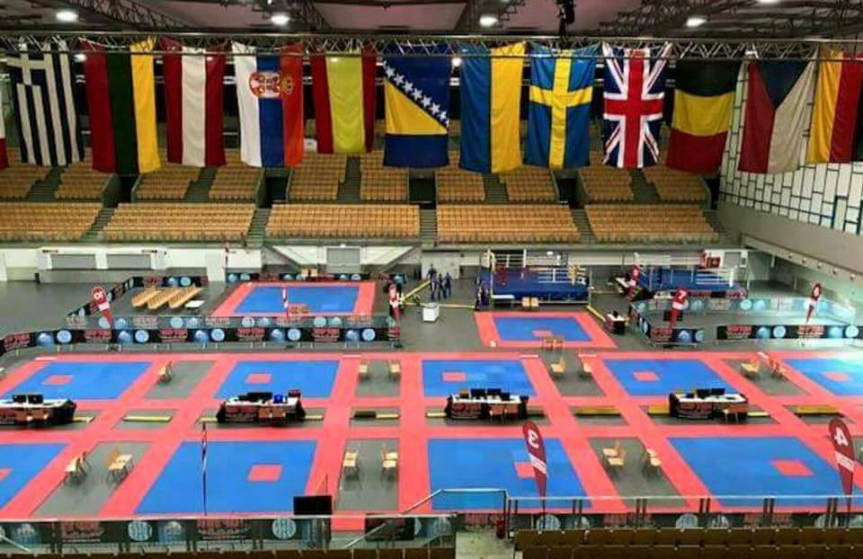
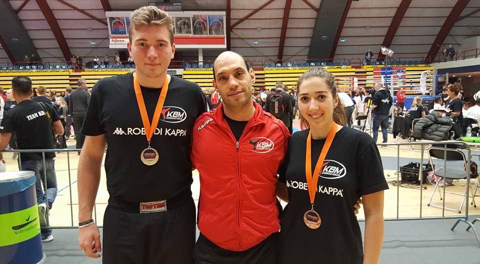
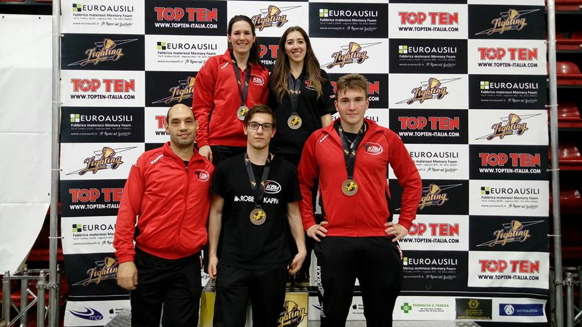
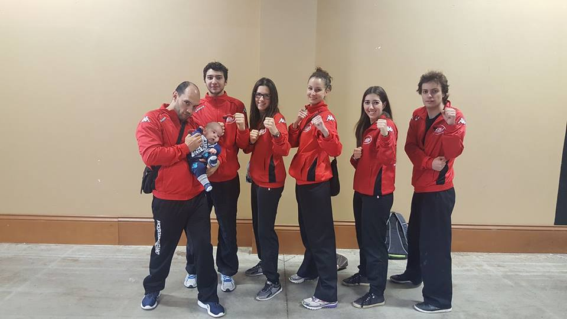
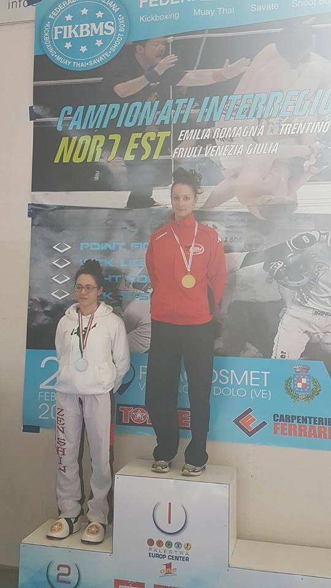
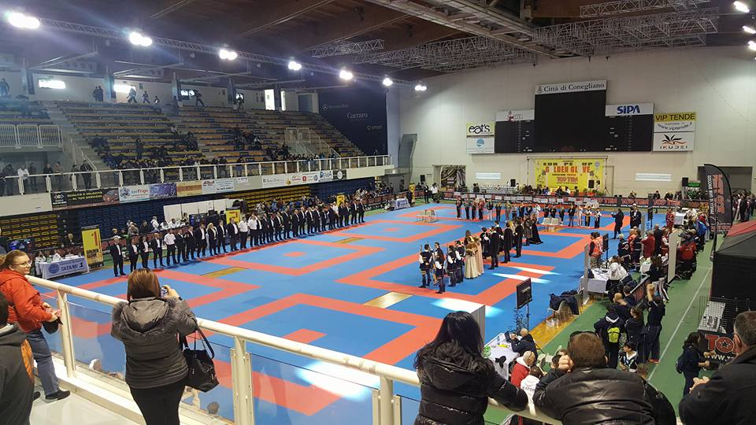

Stampa
Gare e risultati
Austrian Classics World Cup
Innsbruck, Austria

Austrian classics world cup andata in scena ad innsbruck questo fine settimana. Dopo il yokoso dutch open di Amsterdam altri podi per il nostro team con Sarah, 3 in entrambe le categorie iscritte e Alice, anche lei bronzo nella sua categoria. Esordio per il cadetto Samuele alla sua prima gara internazionale che pur perdendo ha dimostrato qualita'. Meno bene Luca ed Andrea che nelle cinture nere non sono riusciti a raggiungere il podio. Un grazie anche al coach Marco che ha accompagnato la squadra. Prossimo appuntamwnto i campionati italiani di Riccione!
Yokoso Dutch Open
Amsterdam, Paesi Bassi

Yokoso Dutch Open ad Amsterdam con 1000 atleti iscritti. Una piccola rappresentanza del nostro team, Andrea ed Alice, seguiti dal coach Maurizio e dall'arbitro del nostro team Iva si e' ben comportata portando a casa un argento con Andrea che ha perso solo la finale della sua categoria dopo 2 turni vinti e un terzo posto con Alice che dopo una partenza difficoltosa e' riuscita a raggiungere il podio. Pronti per il prossimo appuntamento ad Innsbruck con gli Austrian Classics!
Pointsfighting Cup
Milano, Italia

Pointsfighting cup 2017! 4 gli atleti del nostro team presenti e 5 i podi ottenuti! Bronzo per Dennis in entrambe le categorie in cui era iscritto cosi come bronzo anche per Alice e Andrea, tutti fermatisi dopo una semifinale per alcuni difficile per altri piu' fattibile ma persa per mancanza di concentrazione o errori tattici. Argento invece per Sarah che dopo la bella prestazione agli Irish Open di Dublino si e' ripetuta anche qui perdendo solo la finale contro una piu' esperta atleta greca dopo aver vinto 2 incontri. Un buon risultato in vista del Dutch Open di Amsterdam in programma il prossimo fine settimana.
Irish Open 2017
Dublino, Irlanda

Ultimo giorno di combattimenti all' irish open 2017! Il nostro team conquista un fantastico 3 posto con Sarah alla sua seconda gara in carriera. Dopo aver battuto Irlanda e Norvegia si arrende solo in semifinale contro una piu' esperta atleta Inglese. Bravissima! In complesso bene anche gli altri nostri atleti Luca Simone ed Alice che anche se non sono arrivati a podio hanno dato il massimo nei loro incontri.
Interregionale 2° parte
Dolo, Italia

Seconda fase del campionato interregionale a Dolo. Il nostro team conquista 2 ori e 1 bronzo. Oro ad Andrea Neri e Valeria Puntscher che cosi' si sono aggiudicati la qualifica al criterium, bronzo per Dennis Angheben alla sua seconda gara stagionale. Ancora qualche giorno per rifinire la preparazione e poi partenza per la competizione piu' grande: l'irish open di Dublino!
Golden Glove
Venezia, Italia

La coppa europa GOLDEN GLOVE, prima gara del 2017 vede la nostra squadra partecipare con 3 atleti: Andrea, Valeria e Maurizio che sta volta oltre ad essere il coach del team rientra in gara dopo la vittoria mondiale di 3 anni fa. E centra il gradino piu' alto del podio nella sua categoria dopo 2 belle vittorie!
Ottima anche la prestazione di Andrea che perde solo la finale contro un forte atleta sloveno, piu' esperto di lui.
Valeria si comporta bene ma non riesce ad esprimersi come suo solito, cosa che la penalizza favorendo la vittoria della sua avversaria inglese.
In complesso un bel risultato per il nostro team in attesa del rientro degli altri atleti.
Prossimo appuntamento il campionato interregionale di febbraio!
Interregionale 1° parte
Dolo, Italia
Interregionale Rovigo. Prima gara della nuova stagione 2016/2017 e primi risultati per il nostro team KBM! Valeria si impone nella categoria 60kg cinture nere, mentre Simone e Dennis portano a casa un meritato terzo piazzamento. Prima esperienza per Sarah e Christiane, al rientro dopo un anno di pausa. Buona anche la prestazione di Luca ed Alice, che pur perdendo hanno ben figurato. Ora preparazione per il prossimo appuntamento. Complimenti a tutti!